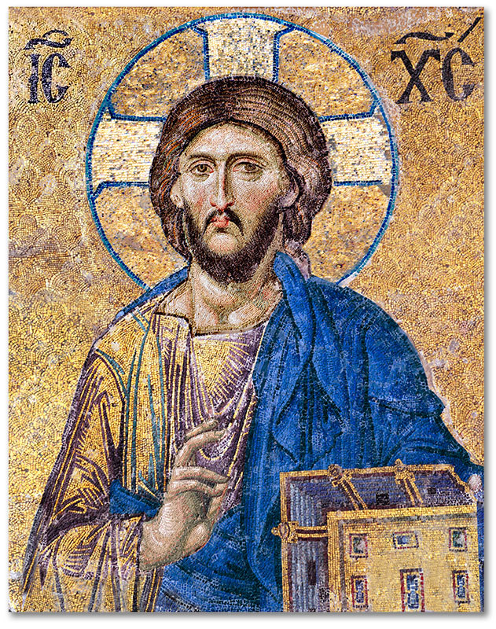

Jesus Christ

Who is Jesus of Nazareth?
As Christains we believe:
- He is the Only Begotten Son of God
- He was born of the Father before all ages
- He is consubstantial with the Father
- For our salvation; by the Holy Ghost He was incarnate of the Virgin Mary and became man
- He was crucified under Pontius Pilate, died, and was buried
- He rose again on the third day
- He ascended into heaven and is seated at the right hand of the Father
- He will come again in glory
- He will judge the living and the dead
- His kingdom will have no end